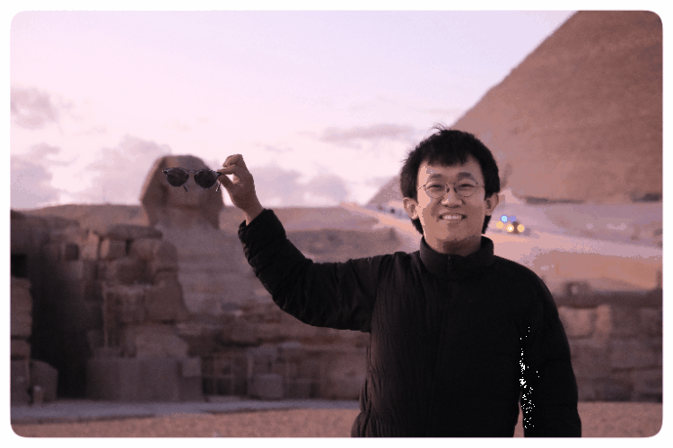
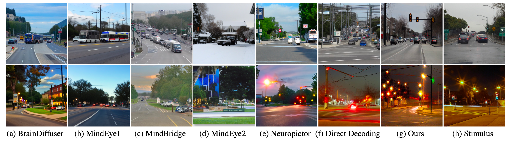
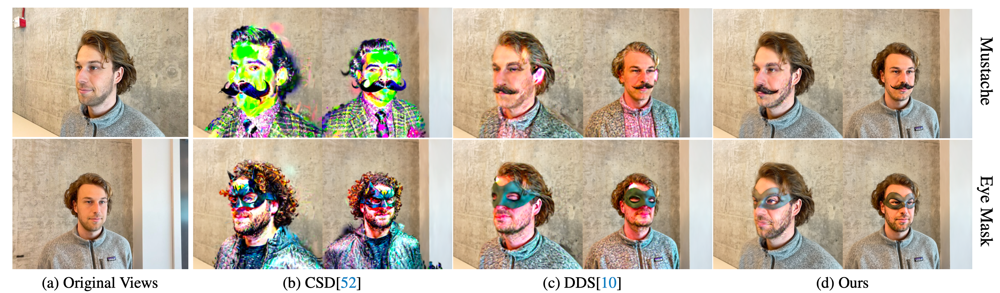
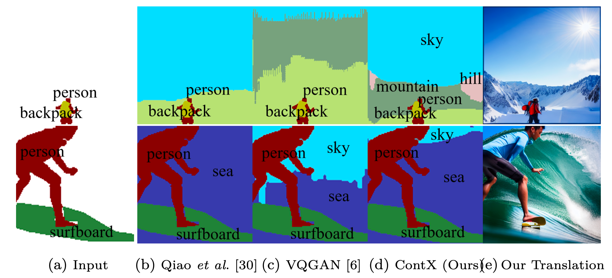
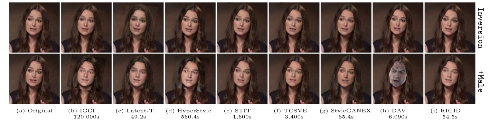
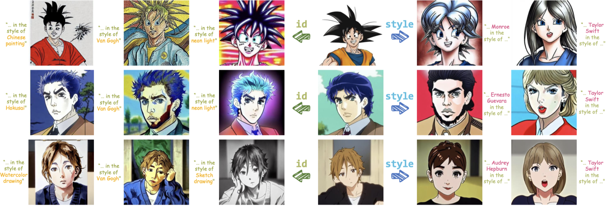
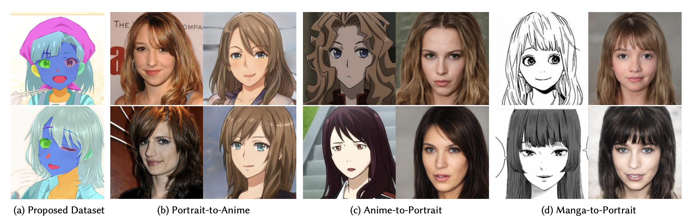
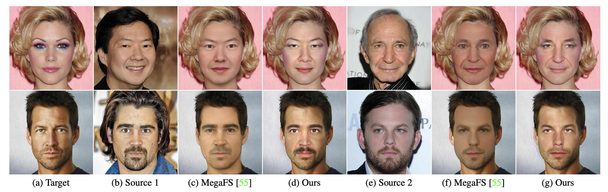
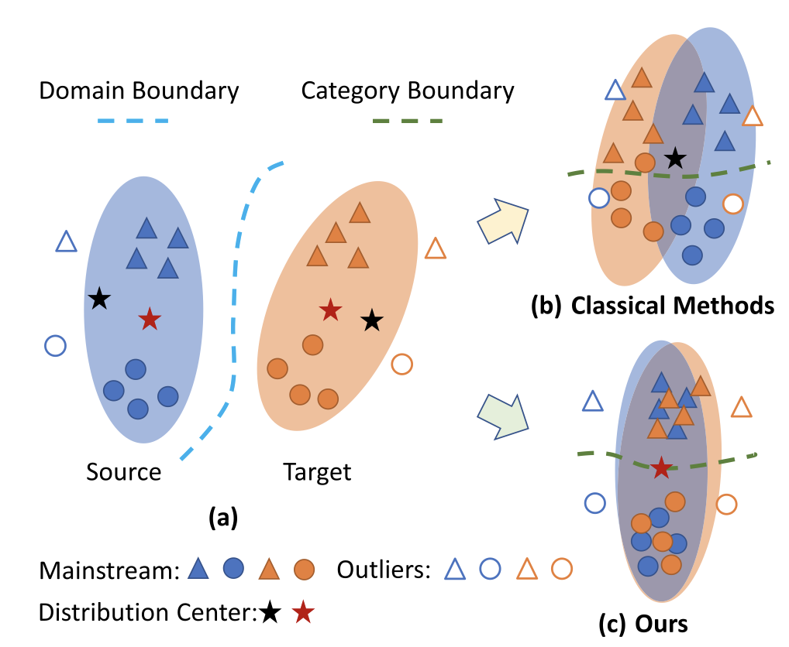

Yangyang Xu
|
 |
Biography
Yangyang Xu is an Associate Professor at the Harbin Institute of Technology, Shenzhen. Prior to this, he was a Postdoctoral Researcher with Prof. Tingting Zhu at the University of Oxford from 2024 to 2025. He also held a Postdoctoral position under the supervision of with Prof. Ping Luo at the University of Hong Kong from 2021 to 2024. He earned his Ph.D. at the South China University of Technology, under the supervision of Prof. Shengfeng He and Prof. Xuemiao Xu.
His research primarily focuses on vision generative models, encompassing the understanding, control, design, and generalization of these models.
News
- 07/2025: One paper is accepted by ACM MM.
- 06/2025: Three papers are accepted by ICCV.
- 01/2025: One paper is accepted by IJCV and two papers are accepted by AAAI.
Publications

|
DiffusionMat: Alpha Matting as Deterministic Sequential Refinement Learning Yangyang Xu, Shengfeng He, Wenqi Shao, Yong Du, Kwan-Yee K. Wong, Yu Qiao, Jun Yu, Ping Luo ACM MM 2025 PDF / Supp / Code |
|  | Cross-Subject Mind Decoding from Inaccurate Representations Yangyang Xu, Bangzhen Liu, Wenqi Shao, Yong Du, Shengfeng He, Tingting Zhu ICCV 2025 PDF / Supp / Project |
|  | Stable Score Distillation Haiming Zhu, Yangyang Xu*, Chenshu Xu, Tingrui Shen, Wenxi Liu, Yong Du, Jun Yu, Shengfeng He ICCV 2025 PDF / Supp / Project |

|
OmniVTON: Training-Free Universal Virtual Try-On Zhaotong Yang, Yuhui Li, Shengfeng He, Xinzhe Li, Yangyang Xu, Junyu Dong, Yong Du ICCV 2025 PDF / Supp / Project |
|  | ContX: Scene context prediction via context bank and layout perception Jingxin Liang+, Yangyang Xu+, Haorui Song, Yuqin Lu, Yuhui Deng, Yiyi Long, Yan Huang, Shengxin Liu, Jianbo Jiao, Shengfeng He PR 2025 PDF / Supp / Code |
|  | RIGID: Recurrent GAN Inversion and Editing of Real Face Videos and Beyond Yangyang Xu, Shengfeng He, Kwan-Yee K. Wong, Ping Luo IJCV 2025 PDF / Supp / Project |

|
Occlusion-Insensitive Talking Head Video Generation via Facelet Compensation Yuhui Deng, Yuqin Lu, Yangyang Xu, Yongwei Nie, Shengfeng He AAAI 2025 PDF / Supp / Code |

|
PersonaMagic: Stage-Regulated High-Fidelity Face Customization with Tandem Equilibrium Xinzhe Li, Jiahui Zhan, Shengfeng He, Yangyang Xu, Junyu Dong, Huaidong Zhang, Yong Du AAAI 2025 PDF / Supp / Code |

|
Learning Coherent Portrait-to-Anime Translation via Latent Cyclic Transformation
Yangyang Xu, Shengfeng He, Kwan-Yee K. Wong, Ping Luo CVMJ 2024 PDF / Supp / Code |
|  | DreamAnime: Learning Style-Identity Textual Disentanglement for Anime and Beyond
Chenshu Xu, Yangyang Xu, Huaidong Zhang, Xuemiao Xu, Shengfeng He TVCG 2024 PDF / Supp / Code |
| RIGID: Recurrent GAN Inversion and Editing of Real Face Videos Yangyang Xu, Shengfeng He, Kwan-Yee K. Wong, Ping Luo ICCV 2023 PDF / Supp / Project |
|
|  | Parsing-Conditioned Anime Translation: A New Dataset and Method Zhansheng Li+, Yangyang Xu+, Nanxuan Zhao, Yang Zhou, Yongtuo Liu, Dahua Lin, Shengfeng He ACM TOG 2023 PDF / Supp / Code |
| Self-supervised Matting-specific Portrait Enhancement and Generation Yangyang Xu, Zeyang Zhou, Shengfeng He IEEE TIP 2022 PDF / Supp / Code |
|
|  | High-resolution Face Swapping via Latent Semantics Disentanglement Yangyang Xu, Bailin Deng, Junle Wang, Yanqing Jing, Jia Pan, Shengfeng He CVPR 2022 PDF / Supp / Code |

|
Pro-PULSE: Learning Progressive Encoders of Latent Semantics in GANs for Photo Upsampling Yang Zhou+, Yangyang Xu+, Yong Du, Qiang Wen, Shengfeng He IEEE TIP 2022 PDF / Supp / Code |

|
Background Matting via Recursive Excitation Junjie Deng+, Yangyang Xu+, Zeyang Zhou, Shengfeng He ICME 2022 PDF / Supp / Code |
| Representative Feature Alignment for Adaptive Object Detection Shan Xu, Huaidong Zhang, Xuemiao Xu, Xiaowei Hu, Yangyang Xu, Liangui Dai, Kup-Sze Choi, Pheng-Ann Heng IEEE TCSVT 2022 PDF / Supp / Code |

|
From Continuity to Editability: Inverting GANs with Consecutive Images Yangyang Xu, Yong Du, Wenpeng Xiao, Xuemiao Xu, Shengfeng He ICCV 2021 PDF / Supp / Code |
| Multi-view Face Synthesis via Progressive Face Flow Yangyang Xu, Xuemiao Xu, Jianbo Jiao, Keke Li, Cheng Xu, Shengfeng He IEEE TIP 2021 PDF / Erratum / Code |
|

|
Holistically-Associated Transductive Zero-Shot Learning Yangyang Xu, Xuemiao Xu, Guoqiang Han, Shengfeng He IEEE TCDS 2021 PDF / Supp / Code |

|
Invertible Grayscale with Sparsity Enforcing Priors Yong Du, Yangyang Xu, Taizhong Ye, Qiang Wen, Chufeng Xiao, Junyu Dong, Guoqiang Han, Shengfeng He ACM TOMM 2021 PDF / Supp / Code |

|
Deep Texture-Aware Features for Camouflaged Object Detection Jingjing Ren, Xiaowei Hu, Lei Zhu, Xuemiao Xu, Yangyang Xu, Weiming Wang, Zijun Deng, Pheng-Ann Heng IEEE TCSVT 2021 PDF / Supp / Code |
| Transductive Zero-shot Action Recognition via Visually-connected Graph Convolutional Networks Yangyang Xu, Chu Han, Jing Qin, Xuemiao Xu, Guoqiang Han, Shengfeng He IEEE TNNLS 2020 PDF / Supp / Code |
|  | Unsupervised Domain Adaptation via Importance Sampling Xuemiao Xu, Hai He, Huaidong Zhang, Yangyang Xu, Shengfeng He IEEE TCSVT 2019 PDF / Supp / Code |
| Ensemble One-Dimensional Convolution Neural Networks for Skeleton-Based Action Recognition Yangyang Xu, Jun Cheng, Lei Wang, Feng Liu, Dapeng Tao IEEE SPL 2018 PDF / Supp / Code / |
|

|
Human Action Recognition by Learning Spatio-Temporal Features With Deep Neural Networks Lei Wang, Yangyang Xu, Jun Cheng, Jianqin Yin, Jiaji Wu IEEE Access 2018 PDF / Supp / Code |
| DTA: Double LSTM with temporal-wise attention network for action recognition Yangyang Xu, Lei Wang, Jun Cheng, Jiaji Wu ICCC 2017 PDF / Supp / Code |
Professional Activities
Reviewer
- NeurIPS, ICML, ICLR, SIGGRAPH, SIGGRAPH Asia, CVPR, ICCV, ECCV, AAAI, IJCAI, P&G.
- IEEE TPAMI, IEEE IJCV, IEEE TIP, IEEE TNNLS, Pattern Recognition, Neural Computing, IEEE SPL.
Seminar Report
-
Portrait Editing and Matting In Generative Way
at CMU, Online. 2024.03Image and Video Processing using Generative Models
at VITA Lab in EPFL, Online. 2023.02Image and Video Editing Based on Generative Adversarial Networks
at Shanghai AI Lab, Shanghai. 2022.06Research on Several Problems Based on Generative Adversarial Models
at Tencent, Shenzhen. 2021.11Graph Convolutional Neural Networks for Zero-shot Action Recognition
at City University of Hong Kong, Hong Kong. 2018.12.Volunteer
- Chinagraph 2018
© Yangyang Xu | Last updated: July, 2025.